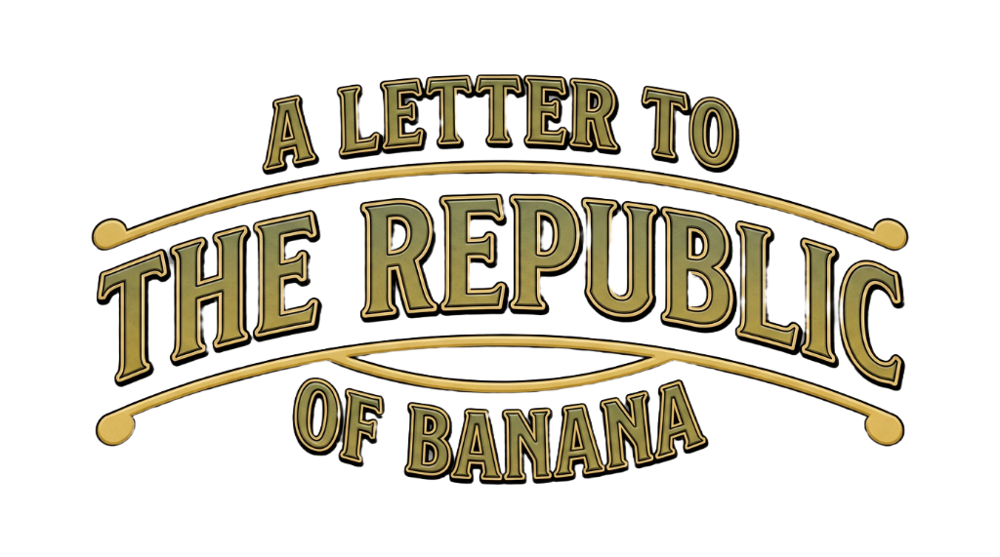

Dear President,
When I think about Banana Republic,
I begin with a simple question:
What does it mean to look at the world through an eye of humility—
perhaps for the first time?
In the 1960s, America was filled with optimistic certainty.
The economy was booming. Innovation was everywhere.
There was a belief that progress was inevitable
— that technology, growth, and power would keep expanding.
And then, the rhythm broke.
The oil crisis arrived.
The Vietnam War ended not in victory, but in reckoning.
The American economy, which had been built on the assumption of cheap energy and endless growth, stalled.
At the same time, the baby boomer generation entered the workforce
— suddenly there were more people than opportunities.
This was not only an economic shift.
It was a psychological one for every American.
For the first time in a long while,
America had to learn how to be humble.
Not because it wanted to be — but because it had to be.
And it was in this space—
between uncertainty and self-examination—
that Banana Republic emerged.
Instead of escaping the world, or trying to dominate it,
the brand approached the world with curiosity.
Traveling — not as conquest, but as learning.
Going to jungles, markets, small shops, here and there —
bringing back pieces that let Americans see how beautiful other cultures could be.
What’s powerful is that Banana Republic transformed colonial imagery.
It stripped it of dominance and reframed it as a self-reflective American identity.
Not imperial.
Not extractive.
But attentive.
Even the garments themselves carried this ethic.
The construction became simpler.
Fabrics were washed, practical.
Silhouettes were functional.
These were clothes meant to age alongside their wearer—
to hold memory.
The message of the late 1970s was clear:
Life isn’t always shiny, but it’s real.
To me, the core of Banana Republic is this idea:
An American who seeks the world with humility — and comes home changed.
The DNA of the brand, as I see it, is very specific:
It offered a way to belong without shouting.
A way to be proud without needing to dominate.
If I had to name its spirit, it would be this:
Born in a time of uncertainty,
it dressed Americans not to escape the world,
nor to rule it—
but to meet it with curiosity and care.
And perhaps that is why it matters again today.
In a world that once again feels dominated by force, competition, and power,
there is something incredibly meaningful about a brand that can quietly — non-politically — remind people of another way to be.
This is not nostalgia.
but inheritance.
Once again,
to move through the world with care,
to notice more than we take,
and to leave something thoughtful behind.
Yours,
Monkey, 2026